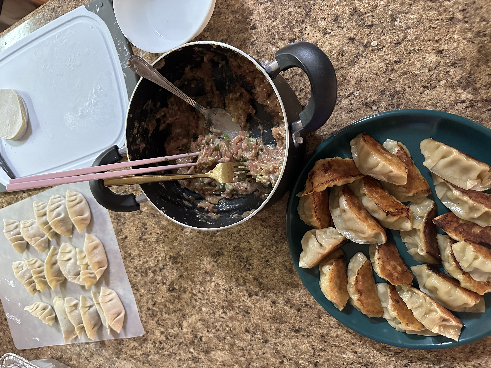
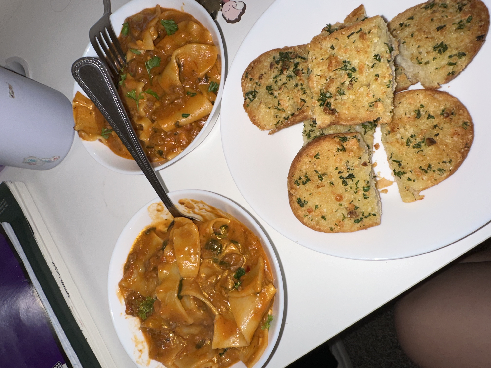
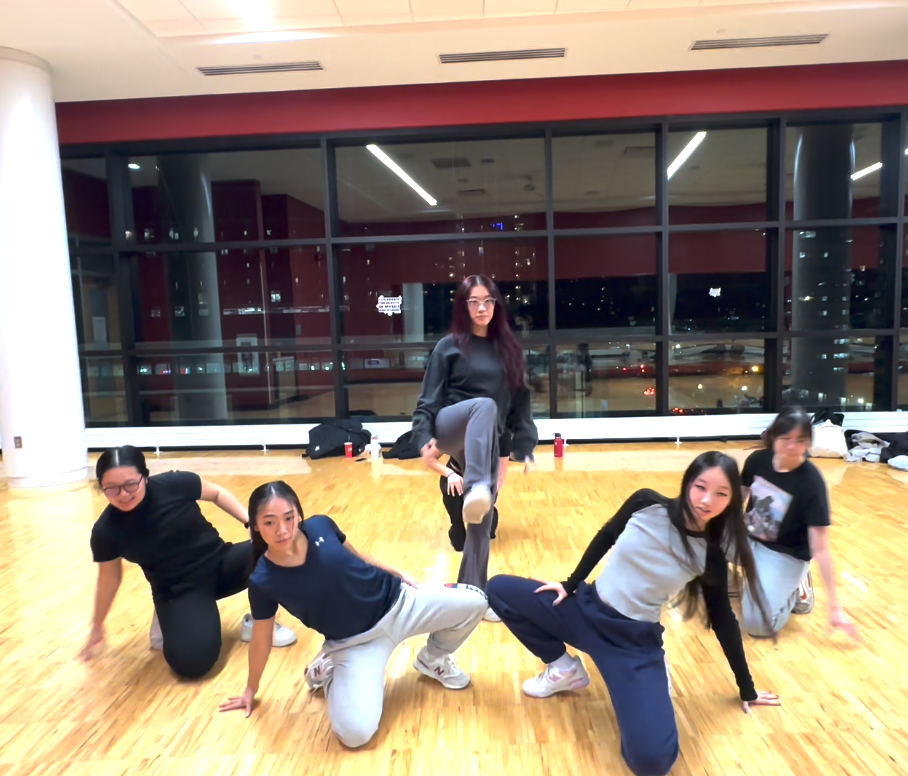

My Hobbies!
Below are just a few hobbies that I often do that I would like to highlight.
Cooking
- Cooking is a hobby that I developed during quarantine and COVID-19. I often tried out different recipes and attempted to create my own. Since then, I often cook for myself as well as my friends and family. To me, cooking is a way of creative expression, a method to unwind, and an opportunity to spend quality time with family and friends. In the photos below, I made pork and cabbage dumplings as well as lasagna soup and cheesy garlic bread.


Dancing
- Dancing is a hobby that I rediscovered in college. Through participation in certain extracurricular activities, I've had the opportunity to reconnect with this hobby and engage in it regularly. Within my sorority, there are often opportunities to take part in dance competitions, where I both dance and assist in choreography.
